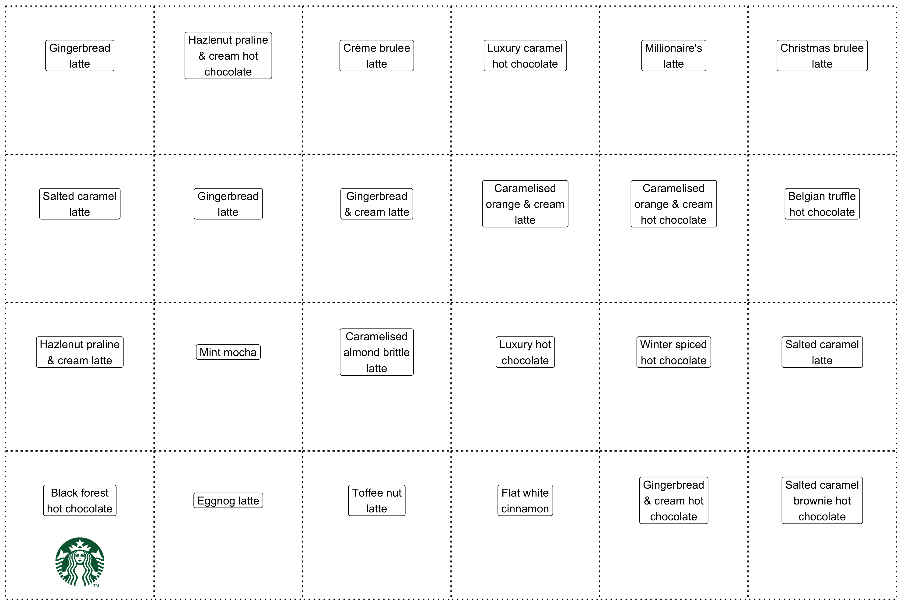

This Christmas it suddently hit me. There are probably enough festive coffees at Starbucks etc that you could use them to populate a very tasty advent calendar.
In the interests of helping everyone explore the range of Christmassy drinks on offer, I’ll be updating my deposit 24 days of Christmass drinks on Figshare every year from now on. This blogpost takes you through how you can create the advent calendar below using ggplot2, I’m planning on creating an extension to make this easier in future 1.

Christmassy drinks of 2018
Before we can collate our advent of Christmassy drinks, we need to make some decisions:
- What counts as a Christmassy drink?
- Any drink that I can buy all the way through 1st December through to 24th December (so no Pumpkin Spice lattes, sadly).
- Which cafes should be included?
- It’s my first year doing this. I’m going to choose places that are easy for me to get to!
- Do hot chocolates count?
- I really wish they didn’t. But I could only find 15 festive coffee-based drinks within easy reach of me.
After searching through a few menus, here are my selections for the Christmassy drinks of 2018:
Make your own ggplot2 advent
If you want to follow along, please follow these steps first:
Create a new RStudio project
Create a data directory by running
dir.create("data")Create a new script
christmassy-drinks-advent.R, at the top of the script load all the packages we’ll need:
library("tidyverse") # data manipulation
library("grid") # rasterise images for ggplot2
library("ggpubr") # set background image for ggplot2 panel
library("magick") # manipulate images and export a .gif
library("here") # see https://github.com/jennybc/here_here#readme- Download version 3 of the Figshare deposit DOI:10.6084/m9.figshare.7376228.v3 by adding this code to your script:
dir.create("data")
download.file("https://ndownloader.figshare.com/articles/7376228/versions/3",
"data/christmassy-drinks-2018.zip")
unzip("data/christmassy-drinks-2018.zip",
exdir = "data")
unlink("data/christmassy-drinks-2018.zip")- Can we tidy up things a bit? There are images in the data folder, which isn’t very good practice.
dir.create("images")
retailer_logos <- list.files("data", "*.png|.jpg", full.names = TRUE)
file.copy(retailer_logos, "images")
file.remove(retailer_logos)- If you follow along exactly with this blogpost, you’ll have 200+ lines of code in one script file! Make your life easier by splitting your script in sections as follows (read more here). Please note there’s lots of duplication when following along, it doesn’t really take 200+ lines of code to make this!
# ---- download data ----
download.file("...")
# ---- advent doors ----
ggplot("...")
# ---- advent treats ----
ggplot("...")ggplot2 advent calendar doors
In my opinion, there are only really two true advent calendar layouts:
We can easily compute the centers of all the doors in these advent calendar layouts with tibble() and seq():
portrait_door_centers <- tibble(
x = rep(seq(1, 10, 3), 6),
y = rep(seq(1, 16, 3), times = 1, each = 4))
landscape_door_centers <- tibble(
y = rep(seq(1, 10, 3), 6),
x = rep(seq(1, 16, 3), times = 1, each = 4))This blogpost will be slightly shorter if we continue with a landscape advent calendar, so let’s do that.
Which geom_*() is most suitable for our advent calendar? Well, geom_tile() requires only the centre of our doors. The theme theme_void() throws away the unnecessary axes labels etc, leaving us with our idealised advent calendar:
gg_advent_landscape <- landscape_door_centers %>%
ggplot(aes(x, y)) +
geom_tile(color = "black",
size = 0.6,
linetype = "dotted",
alpha=0) +
theme_void() +
coord_fixed()
gg_advent_landscapeHow about the door labels? Let’s augment the data with door numbers via mutate() and then add geom_label() to display the door number:
set.seed(1)
landscape_door_centers <- landscape_door_centers %>%
mutate(door_number = sample(1:24))
gg_advent_landscape <- landscape_door_centers %>%
ggplot(aes(x, y)) +
geom_tile(color = "black",
size = 0.6,
linetype = "dotted",
alpha = 0) +
geom_label(aes(label = door_number)) +
theme_void() +
coord_fixed()
gg_advent_landscapeggplot2 advent calendar treats
Now we’ve created the doors we need to create the Christmassy drink treats! Let’s import the drinks data and re-order them via the door_number column:
set.seed(1)
christmassy_drinks_2018 <- read_csv(here("posts", "2018-11-28-christmas-drinks-ggplot2-advent-calendar-2018", "24-days-of-christmassy-drinks.csv")) %>%
filter(year == 2018) %>%
slice(landscape_door_centers$door_number) %>%
mutate(door_number = 1:24)
landscape_door_treats <- christmassy_drinks_2018 %>%
left_join(landscape_door_centers)The festive drinks have very long names (e.g. “Salted caramel brownie hot chocolate”), so let’s insert line breaks every 10 characters to prettify our labels:
landscape_door_treats <- landscape_door_treats %>%
mutate(drink.name = gsub("(.{10,}?)\\s", "\\1\n", drink.name))
gg_landscape_door_treats <- landscape_door_treats %>%
ggplot(aes(x, y)) +
geom_tile(color = "black",
size = 0.6,
linetype = "dotted",
alpha = 0) +
geom_label(aes(label = drink.name),
nudge_y = 0.5, # give room for logo
size = 4) +
theme_void() +
coord_fixed()It would look great if we could add the retailers’ logos to the squares. Let’s first import these images from the data folder:
starbucks_logo <- image_read(here("images", "starbucks_logo_2018.png")) %>%
rasterGrob(interpolate = T)
costa_logo <- image_read(here("images", "costa_logo_2018.png")) %>%
rasterGrob(interpolate = T)
cafe_nero_logo <- image_read(here("images", "cafe-nero_logo_2018.jpg")) %>%
rasterGrob(interpolate = T)
greggs_logo <- image_read(here("images", "greggs_logo_2018.png")) %>%
rasterGrob(interpolate = T)
pret_logo <- image_read(here("images", "pret_logo_2018.jpg")) %>%
rasterGrob(interpolate = T)
mc_cafe_logo <- image_read(here("images", "mc-café_logo_2018.png")) %>%
rasterGrob(interpolate = T)Inserting images into ggplot2 charts is most easily achieved using annotation_custom. After a lot of jiggery pokery, these are fairly good options for nudging the logo into an appropriate position in the door:
door_center <- list(x = 1, y = 1)
nudge_logo_ymin <- -1.25
nudge_logo_ymax <- -0.25
nudge_logo_xmin <- -0.5
nudge_logo_xmax <- 0.5
gg_one_logo <- gg_landscape_door_treats +
annotation_custom(starbucks_logo,
ymin = door_center$y + nudge_logo_ymax,
ymax = door_center$y + nudge_logo_ymin,
xmin = door_center$x + nudge_logo_xmin,
xmax = door_center$x + nudge_logo_xmax)
Because annotation_custom only allows us to add one image at a time we need to iteratively add logos for each and every door. I’m a purrr advocate for this kind of task, but if you don’t like this functional approach to things you could use a for loop instead.
pwalk allows us to iterate a function over every row of landscape_door_treats, which in this case adds a annotation_custom layer to gg_logoed_treats. We use the <<- 2 assignment operator so that the global version of gg_logoed_treatsis is updated. pwalk is the same as pmap but doesn’t generate output; side-effects are the only repurcussions of pwalk.
gg_logoed_treats <- gg_landscape_door_treats
landscape_door_treats %>%
pwalk(function(x, y, retailer, ...){
logo <- switch (retailer,
"Starbucks" = starbucks_logo,
"Costa" = costa_logo,
"Café Nero" = cafe_nero_logo,
"Greggs" = greggs_logo,
"McCafé" = mc_cafe_logo,
"Pret" = pret_logo
)
gg_logoed_treats <<- gg_logoed_treats +
annotation_custom(logo, ymin = y - 1.25, ymax = y - 0.25, xmin = x - 0.5, xmax = x + 0.5)
})Background images
We should really add background images to the two parts of our advent calendar; a Christmassy image for the doors and a cardboard background for the insides of the doors.
If we want a background image applied to the panel() component of a ggplot2 chart we need the ggpubr package. The background_image() must be called immediately after ggplot(aes(x, y)) so as to avoid our geoms being hidden behind the background. I found beautiful license-free image from pixelbay which I think looks great for our advent calendar. Let’s add this file to the images directory and then create our now more festive advent calendar doors:
download.file("https://cdn.pixabay.com/photo/2017/12/13/14/48/santa-3016939_640.jpg",
here("posts", "2018-11-28-christmas-drinks-ggplot2-advent-calendar-2018", "santa-3016939_640.jpg"))
christmassy_background <- image_read(here("posts", "2018-11-28-christmas-drinks-ggplot2-advent-calendar-2018", "santa-3016939_640.jpg"))
gg_advent_landscape <- landscape_door_centers %>%
ggplot(aes(x, y)) +
background_image(christmassy_background) +
geom_tile(color = "black",
size = 0.6,
linetype = "dotted",
alpha = 0) +
geom_label(aes(label = door_number)) +
theme_void() +
coord_fixed()
gg_advent_landscapeI think it’s a lot of fun to add a cardboard effect to the treats, so I found this license-free image from flickr which I really enjoy. Let’s add it to our images folder and then add it to our advent calendar treats chart:
download.file("https://farm4.staticflickr.com/3134/3191148261_e3c1f3887b_o_d.jpg",
here("images", "cardboard-effect.jpg"))
cardboard_background <- image_read(here("images", "cardboard-effect.jpg"))
gg_landscape_door_treats <- landscape_door_treats %>%
ggplot(aes(x, y)) +
background_image(cardboard_background) +
geom_tile(color = "black",
size = 0.6,
linetype = "dotted",
alpha = 0) +
geom_label(aes(label = drink.name),
nudge_y = 0.5, # give room for logo
size = 4) +
theme_void() +
coord_fixed()
gg_landscape_door_treatsIteratively opening the advent calendar
The two images we’ve created so far are only really that useful if we’re going to print them out and stick together. And even then, it’s a waste of ink printing out a cardboard effect!
Let’s create a function for opening the advent doors:
open_advent_doors <- function(gg_advent,
advent_treats,
open_doors) {
gg_local <- gg_advent
advent_treats %>%
filter(door_number %in% open_doors) %>%
pwalk(function(x, y, retailer, drink.name, ...) {
logo <- switch(retailer,
"Starbucks" = starbucks_logo,
"Costa" = costa_logo,
"Café Nero" = cafe_nero_logo,
"Greggs" = greggs_logo,
"McCafé" = mc_cafe_logo,
"Pret" = pret_logo
)
gg_local <<- gg_local +
annotation_custom(
cardboard_background %>%
image_crop("-200x400") %>%
rasterGrob(interpolate = T),
ymin = y - 1.5,
ymax = y + 1.5,
xmin = x - 2,
xmax = x + 2
) +
annotation_custom(
logo,
ymin = y - 1.25,
ymax = y - 0.25,
xmin = x - 0.5,
xmax = x + 0.5
) +
geom_label(
data = tibble(x, y, drink.name),
aes(
label = drink.name,
x = x,
y = y
),
nudge_y = 0.5,
# give room for logo
size = 5
)
})
gg_local
}Here’s how our calendar looks after opening 10 doors:
open_advent_doors(gg_advent_landscape,
landscape_door_treats,
1:10)
Unfortunately, I don’t know how to use the incredible gganimate package to animate between door openings. Until I learn how, I’m going to create a .gif by exporting each step of the advent being opened and stitch them together with the magick package.
tibble(remaining_days = 1:24) %>%
rowwise() %>%
mutate(doors = list(1:remaining_days)) %>%
pwalk(function(doors, ...) {
opened_door <- open_advent_doors(
gg_advent_landscape,
landscape_door_treats,
doors
)
img_path <- here(
"data",
paste0(
"gg_iterative_opened_door_",
formatC(
length(doors),
width = 2,
format = "d",
flag = "0"
),
".png"
)
)
ggsave(
img_path,
opened_door
)
image_read(img_path) %>%
image_trim() %>%
image_resize("1400x") %>%
image_write(img_path)
})
door_open_images <- list.files("images", "gg_iterative_opened_door", full.names = TRUE)
door_open_images %>%
tibble(img = .) %>%
map(function(img){image_read(img)}) %>%
image_join() %>%
image_animate(fps = 0.5) %>%
image_write(here(
"images", "gg_animated_door_openings.gif"))
Footnotes
Please get in touch (martin@visibledata.co.uk) if you fancy working on this together, it’s very new territory for me.↩︎
See Hadley Wickham’s StackOverflow answer for more details↩︎
Reuse
Citation
BibTeX citation:
@online{hadley2018,
author = {Charlotte Hadley},
title = {Christmas {Drinks} Ggplot2 {Advent} {Calendar} 2018},
date = {2018-11-28},
url = {https://visibledata.co.uk/posts/2018-11-28-christmas-drinks-ggplot2-advent-calendar-2018},
langid = {en}
}
For attribution, please cite this work as:
Charlotte Hadley. 2018. “Christmas Drinks Ggplot2 Advent Calendar
2018.” November 28, 2018. https://visibledata.co.uk/posts/2018-11-28-christmas-drinks-ggplot2-advent-calendar-2018.